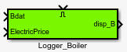
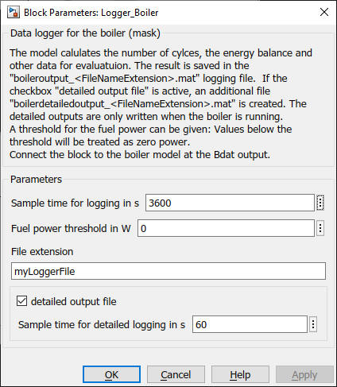

Logger_Boiler
Path: Carnot/Outputs/Logger
Purpose
Creates data files which enable to evaluate the
condensing_boiler model of the Carnot blockset by using
cs_energy_boiler
m-function.
Inputs:
- Bdat (data bus of the boiler)
- Electricity Price (bus with the prices
for consumed electric energy)
- Enable : "true" or "1" activates the logging of the data in the
files
Output:
- disp_b : displaying data of boiler
- files : "boileroutput_extension.mat" and "boilerdetailoutput_extension.mat"where
extension is a string you can choose in the parameters of the block.
The file contains the following information in timeseries. The timeseries
appear in a structure with the variable "boiler".
- boiler.Th_in : inlet temperature (heating) in degree Celsius
- boiler.Th_out : outlet temperature (heating) in degree Celsius
- boiler.MassH : time integral of the mass flow on
the heating side in kg
- boiler.Qh : heating energy in J
- boiler.Th_mean : average operation temperature in degree Celsius
- boiler.MassFuel : mass of consumed fuel in kg
- boiler.EnergyFuel : energy of consumed fuel in J
- boiler.Welec_in : used electric energy in J
- boiler.CostFuel : costs of fuel in -
- boiler.MassH2O : mass of water in the fume gas in kg
- boiler. MassCO2 : mass of CO2 in the fume gas in kg
- boiler.MassO2 : mass of (remaining) O2 in the fume gas in kg
- boiler.MassSO2 : mass of SO2 in the fume gas in kg
- boiler.MassN2 : mass of N2 in the fume gas in kg
- boiler.MassNOx : mass of NOx in the fume gas in kg
- boiler.MassCO : mass of CO in the fume gas in kg
- boiler.MassCxHy : mass of CxHy in the fume gas in kg
- boiler.Cycles : number of on/off cycles
- boiler.OpTime : operation time of the boiler in s
- boiler.CostElecBuy : costs of the electric energy in -
For a full list of data point names see
2_Basic_Concepts.
Parameters and Dialog Box
The file "boilerdetailoutput_extension.mat" is only written
if the parameter "detailed output" is activated. Detailed outputs
are written with a 60 s timestep only if the burner is working.

Examples
Logger_Boiler :
example_LoggerBoiler.slx
Characteristics
Direct Feedthrough Yes
Sample time entered
by user in block parameters
Vectorized No